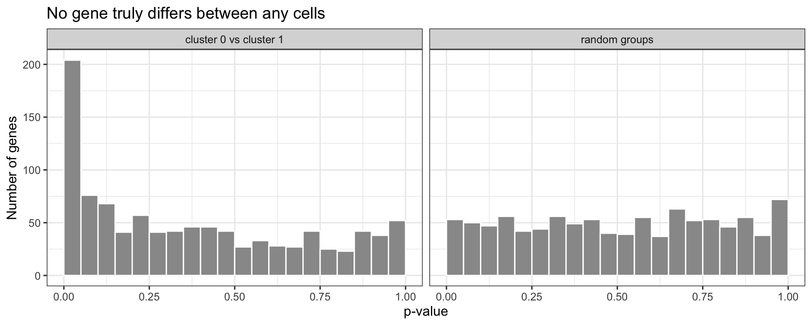
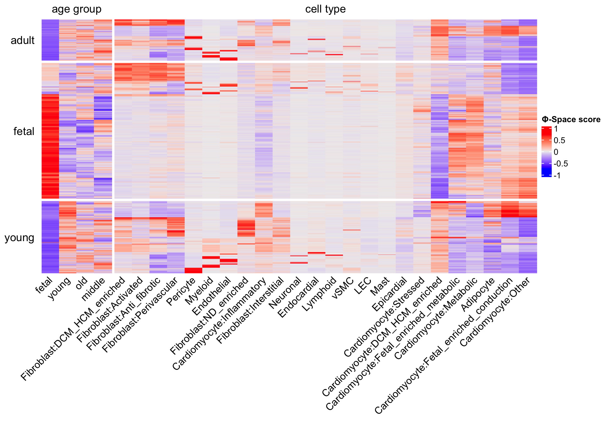
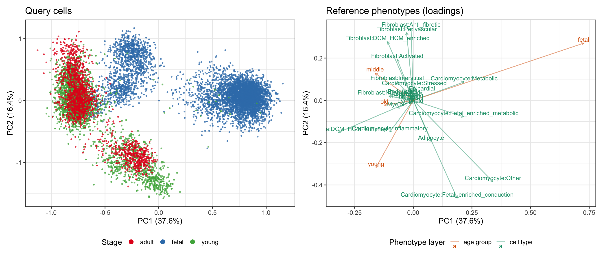
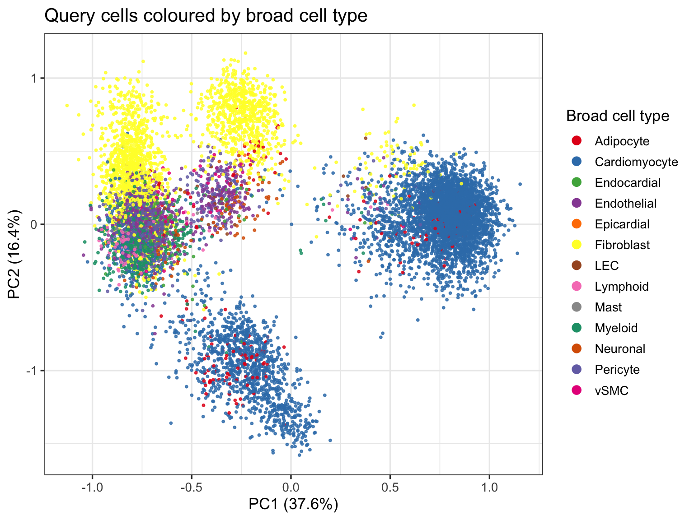
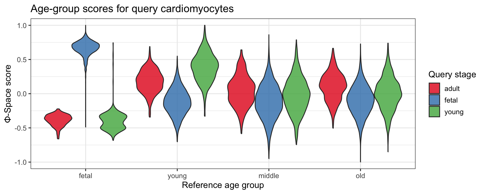
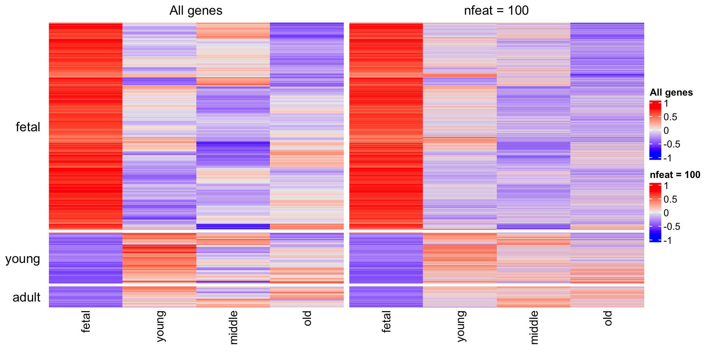

The standard clustering-based cell type annotation annotates cell clusters by looking up their marker genes and assigning each cluster a single discrete label. That approach is intuitive and directly interpretable, but it rests on two assumptions that are not always true for the heart maturation dataset we are analysing:
Another issue of the conventional clustering-based annotation approach is that of ‘double-dipping’, which has been highlighted by recent statistical literature e.g. this paper and that paper. This problem refers to the inflated statistical significance due to conducting clustering and differential gene test on the same data. This problem will probably be more severe when dealing with fine cell types.
To see the problem, we simulate 1,000 cells from one population: every gene has the same expected expression in every cell, so there are no real cell types and no real marker genes. We then run the standard Seurat workflow (cluster, then test for marker genes between clusters). For comparison, we also test between two groups chosen at random, which is what a valid test of “no difference” looks like.
library(Seurat)
library(ggplot2)
set.seed(2026)
n_genes <- 1000
n_cells <- 1000
gene_means <- rgamma(n_genes, shape = 0.5, rate = 0.5)
sim_counts <- matrix(
rpois(n_genes * n_cells, lambda = gene_means), n_genes, n_cells,
dimnames = list(paste0("gene", seq_len(n_genes)),
paste0("cell", seq_len(n_cells)))
)
sim <- CreateSeuratObject(as(sim_counts, "dgCMatrix")) |>
NormalizeData(verbose = FALSE) |>
FindVariableFeatures(verbose = FALSE) |>
ScaleData(verbose = FALSE) |>
RunPCA(npcs = 10, verbose = FALSE) |>
FindNeighbors(dims = 1:10, verbose = FALSE) |>
FindClusters(resolution = 0.5, verbose = FALSE)
table(Idents(sim))##
## 0 1
## 570 430# Clusters 0 vs 1: clustering and testing on the same data
de_clusters <- FindMarkers(sim, ident.1 = "0", ident.2 = "1",
logfc.threshold = 0, min.pct = 0)
# Two random groups: a valid test
sim$random_group <- sample(c("A", "B"), n_cells, replace = TRUE)
de_random <- FindMarkers(sim, ident.1 = "A", ident.2 = "B",
group.by = "random_group",
logfc.threshold = 0, min.pct = 0)
data.frame(
comparison = c("cluster 0 vs cluster 1", "random groups"),
p_below_0.05 = c(sum(de_clusters$p_val < 0.05), sum(de_random$p_val < 0.05)),
adj_p_below_0.05 = c(sum(de_clusters$p_val_adj < 0.05),
sum(de_random$p_val_adj < 0.05))
)rbind(data.frame(comparison = "cluster 0 vs cluster 1", p = de_clusters$p_val),
data.frame(comparison = "random groups", p = de_random$p_val)) |>
ggplot(aes(p)) +
geom_histogram(breaks = seq(0, 1, 0.05), fill = "grey60", colour = "white") +
facet_wrap(~ comparison) +
labs(x = "p-value", y = "Number of genes",
title = "No gene truly differs between any cells") +
theme_bw(base_size = 12)
With no real difference, about 5% of genes should have p < 0.05, and the p-values should be spread evenly between 0 and 1. The random groups behave like that. Between the two clusters, about four times as many genes look “significant”, and some survive multiple-testing correction: the clustering split the cells along random noise, and the test then rediscovers that noise. The same can happen in real data, especially when clusters are split into fine subtypes that differ only slightly.
Our dataset spans foetal, young and adult heart samples, so many cells — especially cardiomyocytes — are in the middle of a maturation continuum. A discrete label forces each cell into one bin and throws away the very gradient we want to study in Module 2 (pseudotime) and Module 3 (cell-specific co-expression networks).
In this module we use Φ-Space (Mao, Deng & Lê Cao, 2025, Genome Biology) to re-annotate the heart data with continuous phenotype scores instead of hard labels. The reference based approach can also alleviate the double-dipping problem in clustering-based approach, since the reference data, where the annotator comes from is different from the query data, on which the annotator is applied.
The core idea of Φ-Space is simple: instead of asking “which cell type is this cell?”, ask “how much does this cell resemble each reference phenotype?”. For every query cell and every phenotype in the reference atlas, Φ-Space returns a real-valued score. A cell that sits halfway between “foetal cardiomyocyte” and “adult cardiomyocyte” will score positively on both; a cell committed firmly to one identity will score high on one and low on the other.
Under the hood, Φ-Space fits a partial least squares
(PLS) regression from gene expression in the reference onto a
dummy matrix of phenotype labels. The fitted model is then applied to
the query, producing one score per cell per phenotype. This matrix of
scores, the phenotype space embedding, is stored as a
reducedDim and becomes the substrate for every downstream
analysis: visualisation, clustering, marker selection, and trajectory
inference.
library(PhiSpace)
library(SingleCellExperiment)
library(Seurat)
library(ggplot2)
library(dplyr)
library(tibble)
library(patchwork)
library(ComplexHeatmap)We need two data objects:
seu <- readRDS("../data/afternoon_mvp.rds")
reference <- readRDS("../data/reference_gao2026.rds")
cat("Query (Seurat):\n")## Query (Seurat):cat(" - cells:", ncol(seu), "\n")## - cells: 10000cat(" - genes:", nrow(seu), "\n")## - genes: 18953cat(" - metadata:", paste(colnames(seu@meta.data), collapse = ", "), "\n\n")## - metadata: orig.ident, nCount_RNA, nFeature_RNA, sample, group, sex, percent.mt, percent.ribocat("Reference (SingleCellExperiment):\n")## Reference (SingleCellExperiment):cat(" - cells:", ncol(reference), "\n")## - cells: 6096cat(" - genes:", nrow(reference), "\n")## - genes: 16115cat(" - assays:", paste(assayNames(reference), collapse = ", "), "\n")## - assays: logcountscat(" - cell types:", length(unique(reference$final_cell_type)), "\n")## - cell types: 13cat(" - age groups:", paste(unique(reference$age_group), collapse = ", "), "\n")## - age groups: young, middle, old, fetalΦ-Space works with SingleCellExperiment (SCE) objects,
so we convert the query from Seurat to SCE. The raw counts travel across
as the counts assay; the cell-level metadata travels across
as colData.
query <- as.SingleCellExperiment(seu)
assayNames(query)## [1] "counts"head(colData(query)[, c("sample", "group", "sex")])## DataFrame with 6 rows and 3 columns
## sample group sex
## <character> <character> <character>
## AAACCCAAGTTTCGAC_f1 f1 fetal m
## AAACCCACAAATGAGT_f1 f1 fetal m
## AAACGAACAAACTCTG_f1 f1 fetal m
## AAACGAACAGCGGTTC_f1 f1 fetal m
## AAACGAATCCGATAAC_f1 f1 fetal m
## AAAGAACGTCATACCA_f1 f1 fetal mWe will also set up a cache folder for intermediate results.
Computations that take more than a few seconds are cached to
../results/ so that re-rendering this vignette is fast, and
so that workshop participants can download the pre-computed caches
directly if they prefer.
results_dir <- Sys.getenv("SCW_RESULTS", "../results")
dir.create(results_dir, showWarnings = FALSE, recursive = TRUE)A Φ-Space annotation is only as good as the reference it is built on. For the Sim et al. heart data we need a reference that:
We use the Gao et al. 2026 (Genome Biology)
integrative snRNA-seq atlas of the human left ventricle. It combines 299
donors from eight published studies, spans 8 post-conceptional weeks
through ≥60 years, and provides harmonised cell type and age-group
annotations. We have pre-filtered it to non-diseased donors and balanced
the major cell types by down-sampling; the processing recipe is
documented in the original workshop’s references/HPC_reference_processing.md.
Our query is single-nucleus RNA-seq, and so is the Gao et al. reference. Many published heart atlases are single-cell RNA-seq instead. Discuss with your neighbour: could you use a whole-cell scRNA-seq reference to annotate this snRNA-seq query? What could go wrong, and how would you check?
Two columns from the reference drive everything that follows:
table(reference$final_cell_type)##
## Adipocyte Cardiomyocyte Endocardial Endothelial Epicardial
## 100 1899 119 563 100
## Fibroblast LEC Lymphoid Mast Myeloid
## 1327 100 176 100 678
## Neuronal Pericyte vSMC
## 100 717 117table(reference$age_group)##
## fetal middle old young
## 140 2865 2038 1053Notice the reference’s age_group is
fetal / young / middle / old, while our query’s
group is fetal / young / adult. That is fine —
Φ-Space will score each query cell against all four reference age
groups, and we will use those four scores as a fine-grained read-out of
where on the maturation axis each cell sits.
Looking at final_cell_type above,
Cardiomyocyte (~1,900 cells) and
Fibroblast (~1,300 cells) dominate the reference. They
are also the two lineages we care about most biologically:
cardiomyocytes carry the foetal→adult maturation signal we will trace in
Module 2, and fibroblasts reshape the extracellular matrix across
development. The Gao 2026 authors further annotated these two lineages
into biologically meaningful subclusters
(e.g. Fetal_enriched_metabolic, Stressed,
Interstitial, Perivascular …) — stored in the
cell_type_plus_subcluster column as
CellType:Subtype strings.
We therefore build a fine cell-type column that keeps every non-CM, non-Fibroblast cell on its broad label, and replaces the CM / Fibroblast labels with the Gao subclusters. Two things happen at once:
Fetal_enriched_metabolic CM from a Stressed CM
rather than collapsing both into “Cardiomyocyte”.ct <- reference$final_cell_type
sub <- reference$cell_type_plus_subcluster
# Replace only the two populous lineages with their subclusters;
# leave the rest on their broad label.
reference$cell_type_fine <- ifelse(
ct %in% c("Cardiomyocyte", "Fibroblast"),
sub,
ct
)
sort(table(reference$cell_type_fine), decreasing = TRUE)##
## Pericyte Myeloid
## 717 678
## Cardiomyocyte:Other Fibroblast:ND_enriched
## 605 567
## Endothelial Cardiomyocyte:Metabolic
## 563 406
## Cardiomyocyte:Fetal_enriched_metabolic Fibroblast:Interstitial
## 332 229
## Fibroblast:DCM_HCM_enriched Cardiomyocyte:Stressed
## 205 180
## Lymphoid Cardiomyocyte:Fetal_enriched_conduction
## 176 174
## Cardiomyocyte:DCM_HCM_enriched Endocardial
## 156 119
## vSMC Fibroblast:Anti_fibrotic
## 117 116
## Fibroblast:Perivascular Adipocyte
## 114 100
## Epicardial LEC
## 100 100
## Mast Neuronal
## 100 100
## Fibroblast:Activated Cardiomyocyte:Inflammatory
## 90 42
## Fibroblast:Inflammatory Cardiomyocyte:Senescent
## 6 4Note the alternative we did not take:
balanced subsampling. Instead of splitting the majority
classes, you could down-sample them with
PhiSpace::subsample(..., key = "final_cell_type", minCellNum = ...)
so every cell type contributes a comparable number of reference cells.
That is the right move when you are happy with the broad-class
annotation and simply want fairer PLS training; here we chose to split
instead because the CM / Fibroblast subclusters are interesting in their
own right. The two approaches can also be combined — split first, then
subsample within each fine label.
Even after splitting, some fine labels are tiny
(e.g. Cardiomyocyte:Senescent ≈ 4 cells,
Fibroblast:Inflammatory ≈ 6 cells). Training PLS with a
phenotype represented by a handful of cells is a bad bargain: the column
it produces in the score matrix is mostly noise, and it still consumes a
component in the PLS fit.
PhiSpace() exposes a cellTypeThreshold
argument for exactly this case — set it to, say, 20, and
any phenotype level with fewer than 20 reference cells is dropped before
model fitting. We use it below to prune the long tail of the subtype
split while keeping every lineage that is biologically
well-represented.
Three preparation steps are required before we can run Φ-Space:
The reference is stored with a logcounts assay; the
query carries raw counts. To put both on the same numerical
scale we apply scran normalisation to the query as
well, via PhiSpace’s scranTransf() wrapper.
scranTransf() computes pool-based size factors with
scran::computeSumFactors() and then calls
scuttle::logNormCounts(), storing the result in a
logcounts assay — the same assay name and the same
normalisation family the reference already uses.
ref_cache <- file.path(results_dir, "05_reference_scran.rds")
query_cache <- file.path(results_dir, "05_query_scran.rds")
if (file.exists(ref_cache)) {
reference <- readRDS(ref_cache)
message("Loaded cached scran-normalised reference from ", ref_cache)
} else {
# Reference logcounts is already scran-normalised from the HPC prep
# script — nothing to recompute, just cache for reproducibility.
saveRDS(reference, ref_cache)
}
if (file.exists(query_cache)) {
query <- readRDS(query_cache)
message("Loaded cached scran-normalised query from ", query_cache)
} else {
query <- scranTransf(query)
saveRDS(query, query_cache)
}
assayNames(reference)## [1] "logcounts"assayNames(query)## [1] "counts" "logcounts"Both objects now carry a logcounts assay, and that is
what Φ-Space will use below (refAssay = "logcounts").
How much does it matter that both use the same normalisation? Exercise 2 at the end of this module lets you test it.
PhiSpace() itself keeps only the genes found in both
reference and query, so you don’t need to match genes before calling it.
We still subset the query here, because Modules 2 and 3 continue with
this query object and should only see genes that Φ-Space could use.
zeroFeatQC() then removes genes with no counts in any query
cell.
cat("Reference genes:", nrow(reference), "\n")## Reference genes: 16115cat("Query genes: ", nrow(query), "\n")## Query genes: 18953query <- query[intersect(rownames(query), rownames(reference)), ]
query <- zeroFeatQC(query)
dim(query)## [1] 15094 10000That leaves about 15,000 genes, plenty for PLS.
We now fit the PLS model on the reference and project the query into the phenotype space. We ask for two phenotype layers at once:
cell_type_fine — the split label we built above (CM /
Fibroblast replaced by their Gao subclusters, everything else on its
broad label).age_group (4 levels) — where on the maturation axis
does it sit?We also pass cellTypeThreshold = 20 so that phenotype
levels represented by fewer than 20 reference cells are dropped before
PLS fitting — this trims the long tail of rare CM / Fibroblast
subclusters without touching the well-populated ones.
Fitting the model and scoring all 10,000 query cells takes a few seconds, so we run it live.
query <- PhiSpace(
reference = reference,
query = query,
phenotypes = c("cell_type_fine", "age_group"),
refAssay = "logcounts",
regMethod = "PLS",
center = TRUE,
scale = FALSE,
cellTypeThreshold = 20
)The phenotype-space embedding is stored as a
reducedDim:
phi_scores <- reducedDim(query, "PhiSpace")
dim(phi_scores)## [1] 10000 28colnames(phi_scores)## [1] "Cardiomyocyte:Other"
## [2] "Cardiomyocyte:Fetal_enriched_metabolic"
## [3] "Cardiomyocyte:DCM_HCM_enriched"
## [4] "Cardiomyocyte:Metabolic"
## [5] "Cardiomyocyte:Stressed"
## [6] "Cardiomyocyte:Inflammatory"
## [7] "Cardiomyocyte:Fetal_enriched_conduction"
## [8] "Fibroblast:Activated"
## [9] "Fibroblast:ND_enriched"
## [10] "Fibroblast:Perivascular"
## [11] "Fibroblast:Anti_fibrotic"
## [12] "Fibroblast:Interstitial"
## [13] "Fibroblast:DCM_HCM_enriched"
## [14] "Pericyte"
## [15] "Myeloid"
## [16] "Endothelial"
## [17] "Lymphoid"
## [18] "Endocardial"
## [19] "vSMC"
## [20] "Neuronal"
## [21] "Adipocyte"
## [22] "Mast"
## [23] "LEC"
## [24] "Epicardial"
## [25] "young"
## [26] "middle"
## [27] "old"
## [28] "fetal"round(phi_scores[1:4, 1:6], 3)## Cardiomyocyte:Other Cardiomyocyte:Fetal_enriched_metabolic
## AAACCCAAGTTTCGAC_f1 -0.349 -0.190
## AAACCCACAAATGAGT_f1 -0.470 -0.024
## AAACGAACAAACTCTG_f1 0.136 0.451
## AAACGAACAGCGGTTC_f1 -0.385 -0.244
## Cardiomyocyte:DCM_HCM_enriched Cardiomyocyte:Metabolic
## AAACCCAAGTTTCGAC_f1 -0.013 -0.007
## AAACCCACAAATGAGT_f1 0.055 -0.068
## AAACGAACAAACTCTG_f1 -0.307 0.251
## AAACGAACAGCGGTTC_f1 0.019 0.015
## Cardiomyocyte:Stressed Cardiomyocyte:Inflammatory
## AAACCCAAGTTTCGAC_f1 0.085 0.133
## AAACCCACAAATGAGT_f1 0.136 0.364
## AAACGAACAAACTCTG_f1 -0.004 -0.037
## AAACGAACAGCGGTTC_f1 0.123 0.102Each row is a query cell, each column is a reference phenotype level. Values are column-wise normalised so that the median of each column is zero and the maximum absolute deviation is one — high positive values mean the cell resembles that phenotype, values near zero mean average, and negative values mean the cell is confidently not that phenotype.
Φ-Space defaults ncomp to the total number of phenotype
levels (here 28). This is a sensible starting point that we have found
works well in practice. What we tend to observe is that, when there are
many phenotypes (e.g. 60 cell types), setting ncomp to the
default value (e.g. 60) might be too much. This is because many of these
cell types are heavily correlated, hence we do not need as many
components to capture all the signal. When this is the case, setting
ncomp to, say, 30 , might be a better
choice.
Another setting is nfeat, the number of genes Φ-Space
selects to predict each phenotype. By default it uses all genes.
Exercise 3 at the end of this module asks what changes when you use
fewer.
A good first look is a heatmap with query cells as rows (grouped by developmental stage) and reference phenotypes as columns. The expectation is clear: cells from the foetal group should score high on foetal-related reference phenotypes, and similarly for young and adult.
age_levels <- unique(reference$age_group)
split_phenotype <- ifelse(
colnames(phi_scores) %in% age_levels, "age group", "cell type"
)
ht <- Heatmap(
phi_scores,
name = "Φ-Space score",
row_split = query$group,
column_split = split_phenotype,
cluster_row_slices = FALSE,
show_row_names = FALSE,
show_row_dend = FALSE,
show_column_dend = FALSE,
column_names_rot = 45,
row_title_rot = 0
)
draw(ht, heatmap_legend_side = "right")
Two patterns should jump out:
age group columns, the diagonal block
structure tells you that Φ-Space has correctly recovered the
developmental stage of each query cell without ever being told what
stage it was from.cell type columns, the dominant column for
most cells is one of the Cardiomyocyte: subtypes, as
expected for a heart sample — but a subset of cells score high on
Fibroblast: subtypes, Endothelial,
Myeloid, etc.The phenotype-space embedding is 17-dimensional. To get a
two-dimensional view that still reflects the geometry of the embedding,
we apply PCA to the score matrix. Φ-Space ships a getPC()
helper that returns scores, loadings and variance-explained in one
call.
pc_res <- getPC(phi_scores, ncomp = 5, center = TRUE, scale = FALSE)
round(pc_res$props * 100, 1)## [1] 37.6 16.4 8.9 8.1 5.6PC1 and PC2 together explain a large fraction of the variance in
phenotype space. We now plot the embedding as a biplot:
one panel shows the query cells (the scores), the other
panel shows the reference phenotypes (the loadings) in the
same 2D basis. Reading the two panels together tells you why
cells sit where they do — a cell in the positive-PC1 / positive-PC2
quadrant is being pulled there by the phenotypes that load positively on
both.
scores_df <- as.data.frame(pc_res$scores[, 1:2])
colnames(scores_df) <- c("PC1", "PC2")
scores_df$group <- query$group
loadings_df <- as.data.frame(pc_res$loadings[, 1:2])
colnames(loadings_df) <- c("PC1", "PC2")
loadings_df$phenotype <- rownames(loadings_df)
loadings_df$layer <- ifelse(
loadings_df$phenotype %in% unique(reference$age_group),
"age group", "cell type"
)
pc1_lab <- sprintf("PC1 (%.1f%%)", pc_res$props[1] * 100)
pc2_lab <- sprintf("PC2 (%.1f%%)", pc_res$props[2] * 100)
p_scores <- ggplot(scores_df, aes(PC1, PC2, colour = group)) +
geom_point(size = 0.6, alpha = 0.7) +
scale_colour_brewer(palette = "Set1") +
labs(title = "Query cells", x = pc1_lab, y = pc2_lab, colour = "Stage") +
theme_bw(base_size = 13) +
theme(legend.position = "bottom") +
guides(colour = guide_legend(override.aes = list(size = 3, alpha = 1)))
p_loadings <- ggplot(loadings_df, aes(PC1, PC2, colour = layer)) +
geom_segment(aes(x = 0, y = 0, xend = PC1, yend = PC2),
arrow = arrow(length = unit(0.015, "npc")), alpha = 0.5) +
geom_text(aes(label = phenotype), size = 3.5, vjust = -0.4) +
scale_colour_manual(values = c("age group" = "#d95f02", "cell type" = "#1b9e77")) +
labs(title = "Reference phenotypes (loadings)",
x = pc1_lab, y = pc2_lab, colour = "Phenotype layer") +
theme_bw(base_size = 13) +
theme(legend.position = "bottom")
p_scores + p_loadings
This biplot is the single most useful visualisation in Φ-Space. Read it like this:
fetal, young, middle,
old — that is the maturation axis we will hand off to
slingshot in Module 2.Cardiomyocyte:* arrow
is a cardiomyocyte; one near a Fibroblast:* arrow is a
fibroblast. Cells in between the two arrows are transitional / ambiguous
and would be assigned inconsistently by a hard classifier.Cardiomyocyte:Fetal_enriched_* loadings sit relative to the
adult-stage CM subclusters — query cardiomyocytes should spread along
that direction, which is precisely the trajectory Module 2 will
trace.The stage panel tells us where each donor group lands in
phenotype space, but not which lineage each cell belongs to. To
see that, we recolour the same query PCA by the broad cell type derived
from the fine Φ-Space call (collapsing every Fibroblast:*
back to Fibroblast, every Cardiomyocyte:* to
Cardiomyocyte, etc.). We use RColorBrewer’s
Set1 / Dark2 — pooled to get enough distinct,
high-contrast hues for up to ~12 broad lineages without relying on
subtle shade differences.
We colour by the broad label rather than the fine one
because the fine label has 20+ levels — more than any qualitative
palette can distinguish cleanly. If we ever need to visualise at the
fine resolution, a facet_wrap(~ broad) with the fine label
inside each panel is much more legible than a single plot with 20+
colours.
age_levels_biplot <- unique(reference$age_group)
ct_cols_biplot <- setdiff(colnames(phi_scores), age_levels_biplot)
fine_call <- getLabels(phi_scores[, ct_cols_biplot])
scores_df$broad <- sub(":.*$", "", fine_call)
n_broad <- length(unique(scores_df$broad))
broad_palette <- c(
RColorBrewer::brewer.pal(9, "Set1"),
RColorBrewer::brewer.pal(8, "Dark2")
)[seq_len(n_broad)]
ggplot(scores_df, aes(PC1, PC2, colour = broad)) +
geom_point(size = 0.6, alpha = 0.8) +
scale_colour_manual(values = broad_palette) +
labs(title = "Query cells coloured by broad cell type",
x = pc1_lab, y = pc2_lab, colour = "Broad cell type") +
theme_bw(base_size = 13) +
theme(legend.position = "right") +
guides(colour = guide_legend(override.aes = list(size = 3, alpha = 1)))
Read this panel against the loadings panel above: each
broad-cell-type blob should sit on top of (or adjacent to) the loading
arrows of its own subtypes. Cardiomyocyte cells should cluster around
the Cardiomyocyte:* arrows, fibroblasts around the
Fibroblast:* arrows, and so on.
Sometimes you genuinely do need a single label per cell — for
example, to tabulate cell-type composition per donor. Φ-Space provides
getLabels() for exactly this: it picks the column with the
highest score for each cell.
age_cols <- unique(reference$age_group)
cell_type_cols <- setdiff(colnames(phi_scores), age_cols)
query$PhiCellType <- getLabels(phi_scores[, cell_type_cols])
query$PhiAge <- getLabels(phi_scores[, age_cols])
# Broad label: collapse "CellType:Subtype" back to "CellType".
query$PhiCellTypeBroad <- sub(":.*$", "", query$PhiCellType)
table(query$PhiCellType)##
## Adipocyte Cardiomyocyte:DCM_HCM_enriched
## 213 439
## Cardiomyocyte:Fetal_enriched_conduction Cardiomyocyte:Fetal_enriched_metabolic
## 652 1557
## Cardiomyocyte:Inflammatory Cardiomyocyte:Metabolic
## 211 1116
## Cardiomyocyte:Other Cardiomyocyte:Stressed
## 1375 61
## Endocardial Endothelial
## 143 557
## Epicardial Fibroblast:Activated
## 3 190
## Fibroblast:Anti_fibrotic Fibroblast:DCM_HCM_enriched
## 373 519
## Fibroblast:Interstitial Fibroblast:ND_enriched
## 154 537
## Fibroblast:Perivascular LEC
## 468 25
## Lymphoid Mast
## 100 20
## Myeloid Neuronal
## 519 152
## Pericyte vSMC
## 553 63table(query$PhiCellTypeBroad)##
## Adipocyte Cardiomyocyte Endocardial Endothelial Epicardial
## 213 5411 143 557 3
## Fibroblast LEC Lymphoid Mast Myeloid
## 2241 25 100 20 519
## Neuronal Pericyte vSMC
## 152 553 63table(query$group, query$PhiAge)##
## fetal middle old young
## adult 0 717 561 374
## fetal 4304 518 391 236
## young 16 797 716 1370The group × PhiAge cross-table is a useful
sanity check: most foetal query cells should land in the
fetal reference bin, and most adult query cells in
old — but the off-diagonal entries are where the teaching
is. Those cells are the ones whose continuous scores straddle two age
groups.
Let’s look at the cardiomyocytes more closely — they are the main interest for Module 2:
cm_scores <- phi_scores[query$PhiCellTypeBroad == "Cardiomyocyte", age_cols, drop = FALSE]
cm_df <- as.data.frame(cm_scores) %>%
tibble::rownames_to_column("cell") %>%
mutate(group = query$group[match(cell, colnames(query))]) %>%
tidyr::pivot_longer(all_of(age_cols), names_to = "age_phenotype",
values_to = "score") %>%
mutate(age_phenotype = factor(age_phenotype,
levels = c("fetal", "young", "middle", "old")))
ggplot(cm_df, aes(age_phenotype, score, fill = group)) +
geom_violin(scale = "width", alpha = 0.8) +
scale_fill_brewer(palette = "Set1") +
labs(x = "Reference age group", y = "Φ-Space score",
fill = "Query stage",
title = "Age-group scores for query cardiomyocytes") +
theme_bw(base_size = 13)
Notice that even within a single query stage there is substantial spread along the age-group axis. A hard classifier hides this spread; the continuous scores are exactly what slingshot will exploit to trace a maturation trajectory.
Each PhiSpace() run takes a few seconds, so you can try
different settings and compare the scores with the ones above. The two
helper functions below do the bookkeeping. Neither changes
query or phi_scores, so the rest of the
workshop is not affected.
# Run Φ-Space with the settings used above; return the score matrix.
phi_run <- function(ref, qry, refAssay = "logcounts", queryAssay = NULL, ...) {
res <- PhiSpace(
reference = ref,
query = qry,
phenotypes = c("cell_type_fine", "age_group"),
refAssay = refAssay,
queryAssay = queryAssay,
regMethod = "PLS",
center = TRUE,
scale = FALSE,
cellTypeThreshold = 20,
...
)
reducedDim(res, "PhiSpace")[, colnames(phi_scores)]
}
# Compare new scores with the original ones (`phi_scores`):
# - median correlation of the cell-type and age-group score columns;
# - % of cells that get the same broad and fine cell-type label.
compare_scores <- function(new, old = phi_scores) {
ct <- setdiff(colnames(old), age_cols)
fine_new <- getLabels(new[, ct])
fine_old <- getLabels(old[, ct])
tibble(
cor_cell_type = median(diag(cor(new[, ct], old[, ct]))),
cor_age_group = median(diag(cor(new[, age_cols], old[, age_cols]))),
same_broad_label_pct = 100 * mean(sub(":.*$", "", fine_new) ==
sub(":.*$", "", fine_old)),
same_fine_label_pct = 100 * mean(fine_new == fine_old)
) |>
mutate(across(everything(), \(x) round(x, 2)))
}
compare_scores(phi_scores) # sanity check: identical scoresΦ-Space assumes reference and query are on the same numerical scale.
Find out what happens when they are not. Run Φ-Space three times and
compare each result with compare_scores():
logNormTransf(query, assayName = "counts", targetAssay = "lognorm"),
then
phi_run(reference, query_ln, queryAssay = "lognorm").phi_run(reference, query, queryAssay = "counts"). Read the
warning.RankTransf()), which do not depend on normalisation at
all. Subset the reference to the query’s genes first, so that both rank
the same genes.Which mismatch matters, and which doesn’t? Then discuss:
# a. library-size log-normalisation instead of scran
query_ln <- logNormTransf(query, assayName = "counts", targetAssay = "lognorm")
scores_ln <- phi_run(reference, query_ln, queryAssay = "lognorm")
# b. raw counts in the query, log counts in the reference
scores_counts <- phi_run(reference, query, queryAssay = "counts")
# c. ranks for both, on the same genes
ref_rank <- RankTransf(reference[rownames(query), ], assayname = "logcounts")
query_rank <- RankTransf(query, assayname = "counts")
scores_rank <- phi_run(ref_rank, query_rank, refAssay = "rank")
bind_rows(
"a. library-size log-normalisation" = compare_scores(scores_ln),
"b. raw counts" = compare_scores(scores_counts),
"c. ranks" = compare_scores(scores_rank),
.id = "query normalisation"
)For the discussion:
data layer
holds log-transformed corrected counts, close to an ordinary
log-normalisation, so it can be paired with a log-normalised query, as
in (a). Its scale.data layer holds Pearson residuals, which
are centred and on a different scale: mixing those with log counts is a
mismatch like (b). Best is to re-normalise both datasets the same way
from raw counts; if the reference’s counts are not available, ranks (c)
are a safe fallback.By default, Φ-Space uses all genes. With nfeat, it uses
only the genes that matter most for each phenotype, which is similar in
spirit to using only marker (DE) genes. Run
phi_run(reference, query, nfeat = 100) and compare the
scores with the original ones. Which scores change, and which don’t?
Look in particular at the age-group scores of the cardiomyocytes: does
the adult cardiomyocytes’ best-matching reference age group change?
scores_nf <- phi_run(reference, query, nfeat = 100)
compare_scores(scores_nf)# Median age-group score of cardiomyocytes, by query stage
is_cm <- query$PhiCellTypeBroad == "Cardiomyocyte"
age_order <- c("fetal", "young", "middle", "old")
age_medians <- function(scores) {
apply(scores[is_cm, age_order], 2, \(x) tapply(x, query$group[is_cm], median))
}
list(all_genes = round(age_medians(phi_scores), 2),
nfeat_100 = round(age_medians(scores_nf), 2))## $all_genes
## fetal young middle old
## adult -0.37 0.18 0.04 0.11
## fetal 0.68 -0.12 -0.11 -0.09
## young -0.40 0.39 -0.02 0.00
##
## $nfeat_100
## fetal young middle old
## adult -0.39 0.05 0.17 0.11
## fetal 0.66 -0.04 -0.14 -0.18
## young -0.39 0.27 0.07 0.03stage_split <- factor(query$group[is_cm], levels = c("fetal", "young", "adult"))
age_heatmap <- function(scores, title) {
Heatmap(scores[is_cm, age_order], name = title, column_title = title,
row_split = stage_split, cluster_columns = FALSE,
cluster_row_slices = FALSE, show_row_names = FALSE,
show_row_dend = FALSE, row_title_rot = 0)
}
draw(age_heatmap(phi_scores, "All genes") +
age_heatmap(scores_nf, "nfeat = 100"))
young, middle, old) change the
most. These groups differ in fewer genes, and using all genes dilutes
them. With 100 genes per phenotype, the adult donors’ cardiomyocytes
move from young towards middle, closer to
their true age (35–42 years).Fewer features help when you need specificity between similar phenotypes. They cost robustness: with fewer genes, each gene’s noise matters more.
We save the annotated query object so that Module 2 can pick up where we leave off.
final_cache <- file.path(results_dir, "05_phispace_query.rds")
saveRDS(query, final_cache)
cat("Annotated query at", final_cache, "\n")## Annotated query at /Users/jmao1/Documents/GitHub/scWorkshop/results/05_phispace_query.rdsThe object now carries:
reducedDim(query, "PhiSpace") — the score matrix (fine
cell-type columns + age-group columns).colData(query)$PhiCellType — discrete fine
cell-type label (CM / Fibroblast resolved to subtype).colData(query)$PhiCellTypeBroad — discrete broad
cell-type label (CM and Fibroblast subtypes collapsed back).colData(query)$PhiAge — discrete maturation-stage
label.sample, group,
sex, QC metrics).In Module 2 we will subset this object to
cardiomyocytes (using
PhiCellTypeBroad == "Cardiomyocyte") and apply
slingshot to the PhiSpace score matrix. The continuous
age-group scores will act as the biological anchor that tells slingshot
which end of the trajectory is foetal and which end is adult.
PhiSpace() with one or more phenotype layers, inspect the
scores.getLabels(), but the inverse is not possible — preserve the
scores for any downstream analysis that benefits from soft assignments
(trajectory inference, co-phenotype analysis, gradient
visualisation).sessionInfo()## R version 4.6.0 (2026-04-24)
## Platform: aarch64-apple-darwin23
## Running under: macOS Tahoe 26.6.2
##
## Matrix products: default
## BLAS: /Library/Frameworks/R.framework/Versions/4.6/Resources/lib/libRblas.0.dylib
## LAPACK: /Library/Frameworks/R.framework/Versions/4.6/Resources/lib/libRlapack.dylib; LAPACK version 3.12.1
##
## locale:
## [1] en_AU/en_AU/en_AU/C/en_AU/en_AU
##
## time zone: Australia/Melbourne
## tzcode source: internal
##
## attached base packages:
## [1] grid stats4 stats graphics grDevices utils datasets
## [8] methods base
##
## other attached packages:
## [1] ComplexHeatmap_2.28.0 patchwork_1.3.2
## [3] tibble_3.3.1 PhiSpace_0.99.0
## [5] SpatialExperiment_1.22.0 future_1.70.0
## [7] tidyr_1.3.2 dplyr_1.2.1
## [9] ggplot2_4.0.3 SingleCellExperiment_1.34.0
## [11] SummarizedExperiment_1.42.0 Biobase_2.72.0
## [13] GenomicRanges_1.64.0 Seqinfo_1.2.0
## [15] IRanges_2.46.0 S4Vectors_0.50.1
## [17] BiocGenerics_0.58.1 generics_0.1.4
## [19] MatrixGenerics_1.24.0 matrixStats_1.5.0
## [21] Seurat_5.5.1 SeuratObject_5.4.0
## [23] sp_2.2-1
##
## loaded via a namespace (and not attached):
## [1] RColorBrewer_1.1-3 shape_1.4.6.1 jsonlite_2.0.0
## [4] magrittr_2.0.5 magick_2.9.1 spatstat.utils_3.2-3
## [7] farver_2.1.2 rmarkdown_2.31 GlobalOptions_0.1.4
## [10] vctrs_0.7.3 ROCR_1.0-12 Cairo_1.7-0
## [13] spatstat.explore_3.8-1 htmltools_0.5.9 S4Arrays_1.12.0
## [16] SparseArray_1.12.2 sass_0.4.10 sctransform_0.4.3
## [19] parallelly_1.48.0 KernSmooth_2.23-26 bslib_0.11.0
## [22] htmlwidgets_1.6.4 ica_1.0-3 plyr_1.8.9
## [25] plotly_4.12.0 zoo_1.8-15 cachem_1.1.0
## [28] igraph_2.3.3 iterators_1.0.14 mime_0.13
## [31] lifecycle_1.0.5 pkgconfig_2.0.3 Matrix_1.7-5
## [34] R6_2.6.1 fastmap_1.2.0 clue_0.3-68
## [37] fitdistrplus_1.2-6 shiny_1.14.0 digest_0.6.39
## [40] colorspace_2.1-2 tensor_1.5.1 RSpectra_0.16-2
## [43] irlba_2.3.7 labeling_0.4.3 progressr_1.0.0
## [46] spatstat.sparse_3.2-0 httr_1.4.8 polyclip_1.10-7
## [49] abind_1.4-8 compiler_4.6.0 doParallel_1.0.17
## [52] withr_3.0.3 S7_0.2.2 fastDummies_1.7.6
## [55] MASS_7.3-65 DelayedArray_0.38.2 rjson_0.2.23
## [58] tools_4.6.0 lmtest_0.9-40 otel_0.2.0
## [61] httpuv_1.6.17 future.apply_1.20.2 goftest_1.2-3
## [64] glue_1.8.1 nlme_3.1-169 promises_1.5.0
## [67] Rtsne_0.17 cluster_2.1.8.2 reshape2_1.4.5
## [70] gtable_0.3.6 spatstat.data_3.1-9 data.table_1.18.4
## [73] XVector_0.52.0 spatstat.geom_3.8-1 RcppAnnoy_0.0.23
## [76] foreach_1.5.2 ggrepel_0.9.8 RANN_2.6.2
## [79] pillar_1.11.1 stringr_1.6.0 limma_3.68.4
## [82] spam_2.11-4 RcppHNSW_0.7.0 later_1.4.8
## [85] circlize_0.4.18 splines_4.6.0 lattice_0.22-9
## [88] survival_3.8-9 deldir_2.0-4 tidyselect_1.2.1
## [91] miniUI_0.1.2 pbapply_1.7-4 knitr_1.51
## [94] gridExtra_2.3.1 scattermore_1.2 xfun_0.59
## [97] statmod_1.5.2 stringi_1.8.7 lazyeval_0.2.3
## [100] yaml_2.3.12 evaluate_1.0.5 codetools_0.2-20
## [103] cli_3.6.6 uwot_0.2.4 xtable_1.8-8
## [106] reticulate_1.46.0 jquerylib_0.1.4 Rcpp_1.1.2
## [109] globals_0.19.1 spatstat.random_3.5-0 png_0.1-9
## [112] spatstat.univar_3.2-0 parallel_4.6.0 dotCall64_1.2
## [115] listenv_1.0.0 viridisLite_0.4.3 scales_1.4.0
## [118] ggridges_0.5.7 crayon_1.5.3 purrr_1.2.2
## [121] GetoptLong_1.1.1 rlang_1.3.0 cowplot_1.2.0